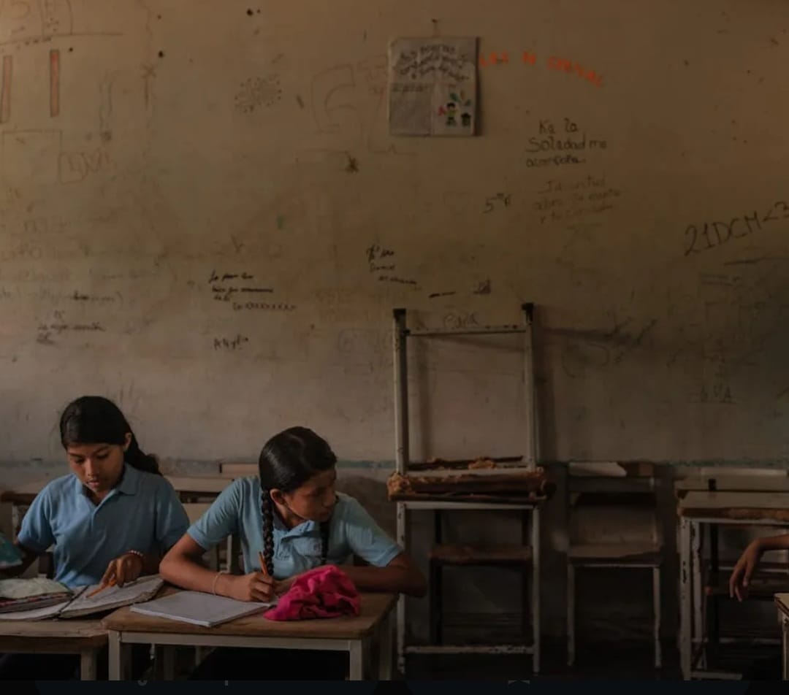

La prevención del abandono escolar consiste en aplicar estrategias para evitar que los estudiantes dejen sus estudios.
Una de las principales estrategias es motivar a los estudiantes para que encuentren sentido a su educación.
Estrategias importantes: organización del tiempo, hábitos de estudio, metas claras, apoyo docente y comunicación con la familia.
También es fundamental detectar a tiempo problemas como el bajo rendimiento o la falta de interés escolar.
La intervención temprana puede evitar que el estudiante abandone la escuela y mejorar su rendimiento académico.